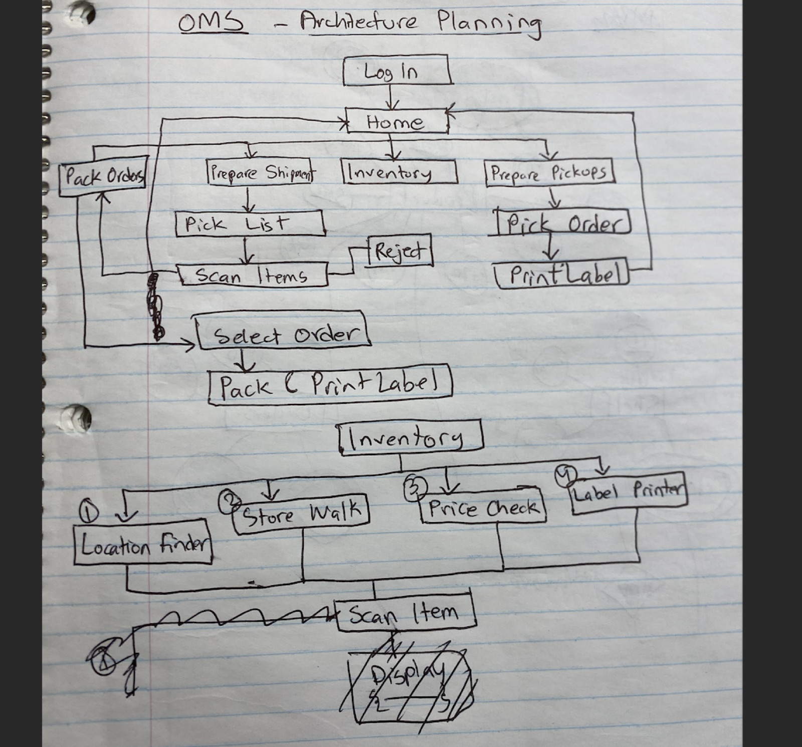
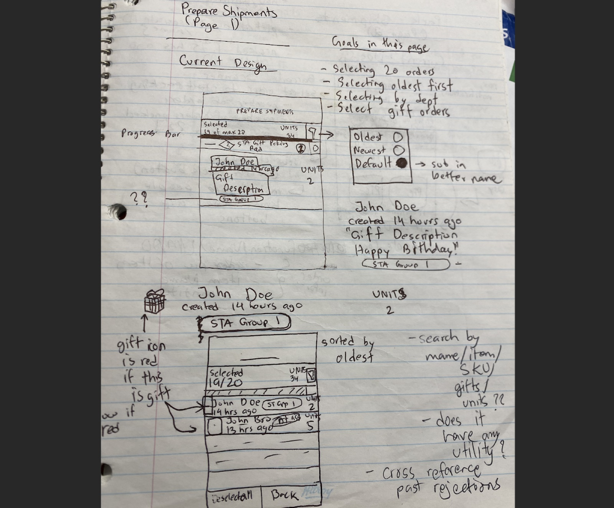
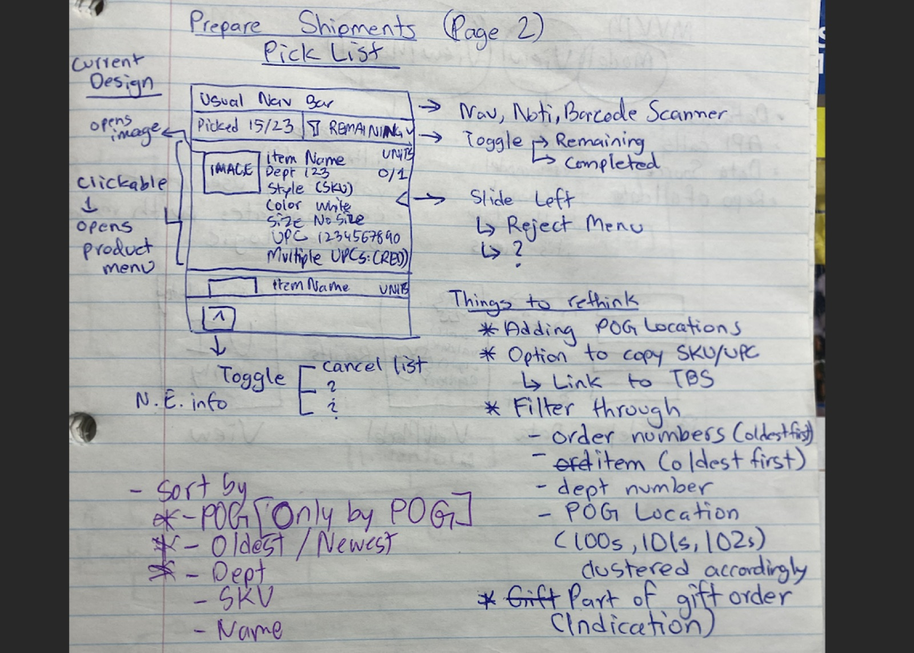
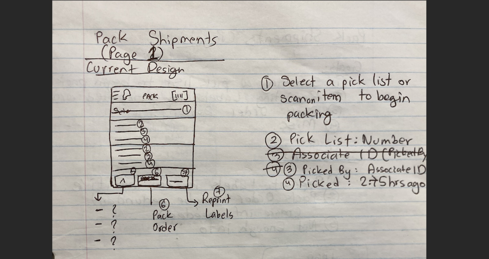
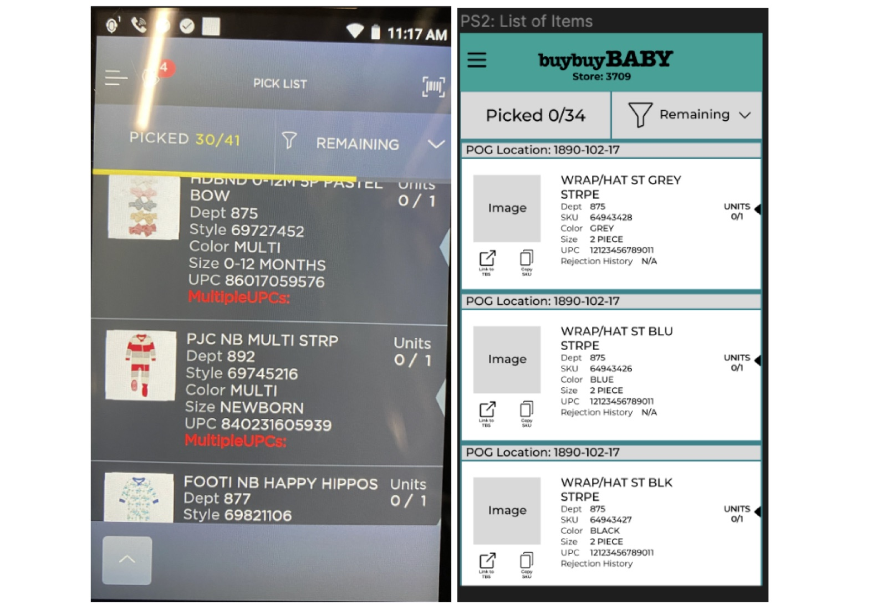

The Problem
I worked as a Fulfilment Associate at BuyBuy Baby and used a tool called Omni every single shift. After a few months of that I started noticing the same friction points coming up over and over, for me and for my coworkers: shelf location data that was buried and inconsistent, order information spread across multiple screens, confirmation steps in the packing workflow that added no value, a visual design that was dense and low contrast, and no clear entry point for new employees trying to learn the system.
The tool got the job done, but it worked against you rather than with you. In retail, where speed and accuracy directly affect the customer standing at the counter, a poorly designed tool isn't just frustrating, it's actually a risk.
Research & Discovery
My research advantage here was pretty unusual: I was the user. I didn't need to recruit participants or run formal sessions because I was already living inside the problem every shift. Over several months I kept informal notes on where things slowed down, where I made errors, and where I caught myself doing unnecessary work. I also talked to coworkers regularly, which turned out to be just as important. Their frustrations overlapped with mine in some areas and diverged in others, and the points where we consistently agreed were the ones I treated as the real signal.
Five themes came out of that process:
- Finding where an item lived on the shelf required too many steps, and the location data itself was sometimes missing or wrong
- A single order's information was fragmented across multiple screens, so you were constantly navigating back and forth to get a complete picture
- The packing workflow included confirmation prompts that served no purpose and just added friction to a task associates were doing dozens of times a shift
- There was no intuitive starting point, which made the onboarding experience for new employees much harder than it needed to be
- The overall visual design was too dense and lacked contrast, which made it slow to scan quickly under pressure
Sketches & Planning




Wireframes

Final Design
The redesign focused on three core workflows: Prepare Shipments, Pack Shipments, and Completed Orders. Each one was rebuilt with a cleaner information hierarchy, more contextual data visible at a glance without extra navigation, and a visual language that used the BuyBuy Baby brand colours associates were already familiar with.


What I Took Away
Being the user gave me research depth that would have been hard to get any other way. I had months of daily context before I drew a single wireframe. But it also created blind spots I didn't fully anticipate. I kept assuming shared knowledge that newer employees simply didn't have, things that felt obvious to me after months on the floor weren't obvious at all to someone on their first week. That was a pretty eye opening reminder of how important it is to design for the full range of experience levels in a user group, not just the one you happen to be at.
The bigger lesson was about what good retail UX actually means. When someone is using a tool like this on the floor, their attention should be on the customer in front of them, not on figuring out where to click next. Every extra second spent navigating the interface is a second the customer is waiting. So the measure of success isn't whether the design is beautiful or clever, it's whether associates stop noticing it at all because it just works the way they expect it to.